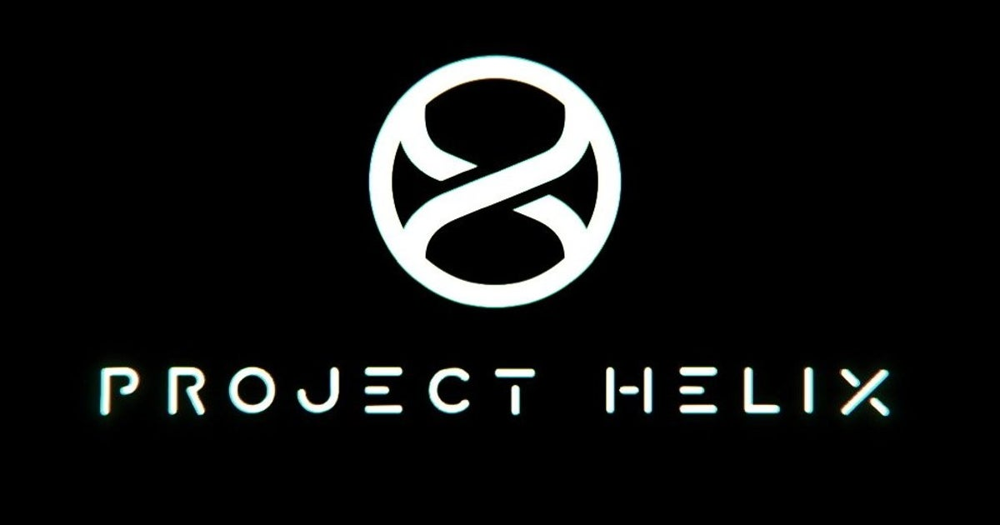

Gaming · 22 Oct 2026
Xbox's next-gen console to reportedly cost up to $1,800, with a Helix handheld coming in 2027 and a full release in holiday 2028

The price of Xbox's next generation console, codename Project Helix, may be higher than many of us expected. Helix, which is reportedly going to ship as two devices, is estimated to cost close to $2,000. Read more
Multiple independent publishers are reporting on the same development: Xbox's next-gen console to reportedly cost up to $1,800, with a Helix handheld coming in 2027 and a full release in holiday 2028.
The available reports place the development in the Gaming category. The accounts were compared for agreement on the central event rather than simply shared names or broad topics.
One of the available reports describes the development this way: The price of Xbox's next generation console, codename Project Helix, may be higher than many of us expected. Helix, which is reportedly going to ship as two devices, is estimated to cost close to $2,000. Read more
Readers should consult the linked source reports for additional context, updates and details that may change as the story develops.
Sources
This article was produced by the C. O. Eric AI Newsroom from the cited sources. It is published only after automated evidence and safety checks.